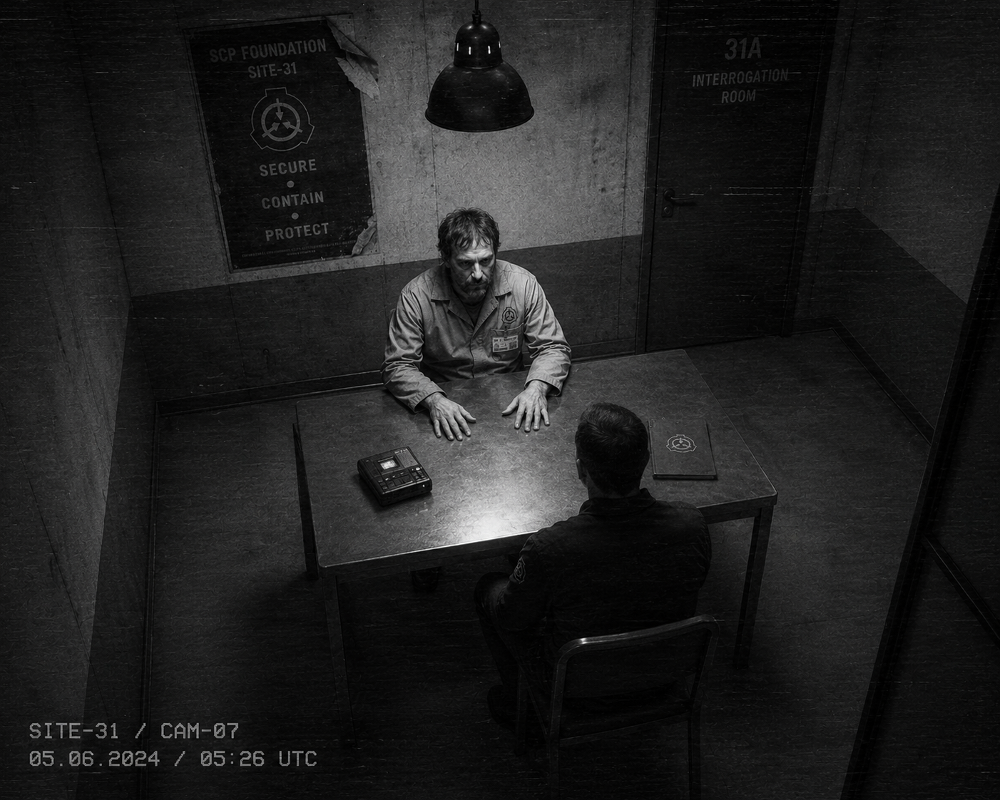

I. Стенограмма (выборка)
Сохранены значимые фрагменты. Полный текст — в материалах дела. К. = Кросс, М. = Морган.
К.: Кайл, давайте начнём с того вечера. Восьмого июня двадцать четвёртого года. Вы заступили на смену в полночь?
М.: В двадцать три пятьдесят. Я всегда приходил раньше. Привычка.
К.: Что вы делали с полуночи до двух часов?
М.: Сменил журналы. Проверил статус двенадцати камер основной линии. Заварил кофе. Просмотрел оперативную сводку. Это рутина. Каждую смену одно и то же.
К.: Хорошо. Что случилось в два часа одиннадцать минут?
М.: [пауза 4 секунды] Я не знаю.
К.: Кайл, у нас есть журнал. В два-одиннадцать в диспетчерскую поступил приказ от О5. В два-четырнадцать вы его исполнили.
М.: Я знаю, что было в журнале. Я знаю, что я его исполнил. У меня в крови нет наркотиков, я проверял через полгода. У меня нет психиатрического диагноза. Я не идиот. Но я не помню, как я это делал.
К.: Опишите, что вы помните. Самое последнее.
М.: Помню, что в два-десять я налил вторую чашку кофе. Потом — ничего. Потом помню, как я уже стою у пульта и смотрю, как открывается камера К-13. Это уже два-четырнадцать. Между ними ничего. Будто промотали.
К.: Ничего? Никакого ощущения?
М.: Свет. Был свет. Не из лампы. Не помню откуда. И тишина. Очень громкая тишина. Вы знаете, что такое громкая тишина?
К.: Знаю.
К.: Кайл, когда вы исполняли приказ, вы должны были проверить наряд на техническую смену. Это в протоколе. Наряд на ту ночь не выписывался. Вы это понимали?
М.: Тогда — нет. Сейчас — да. Сейчас я понимаю, что это было первое, что я должен был сделать. Не открывать камеры, не подтверждать — проверить наряд. Я не проверил. Я не помню, почему я не проверил.
К.: А подтверждение от О5-██ вы запрашивали?
М.: [долгая пауза] Журнал говорит, что да. Я — не помню. Я не запрашивал. Я уверен, что не запрашивал. Но канал O5-DIRECT в журнале фиксирует, что я отправил запрос в два-одиннадцать и получил подтверждение в два-двенадцать. Между ними — одна минута. У меня не было одной минуты. У меня была одна секунда.
К.: Одна секунда?
М.: Между тем, как я налил кофе, и тем, как я смотрел на К-13. Между этим — одна секунда. Так у меня в голове.
К.: Спросил уже четыре раза. Спрошу пятый. Кто-то был в диспетчерской с вами?
М.: Нет. Гермозона была заперта. Кроме меня там никого не могло быть.
К.: Камера диспетчерской пишет?
М.: [горько] Конечно нет. Запись за этот период стёрта. «Плановое техобслуживание».
К.: Плановое.
М.: Плановое.
К.: Кайл, расскажите про сны.
М.: [пауза] Психолог рассказал.
К.: Расскажите.
М.: Мне снится, что я в диспетчерской. Я сижу, смотрю на пульт. Кофе остывает. Никто не приходит. Это сон. Это обычный сон. Но я понимаю, что во сне я что-то делаю руками, и это что-то открывает камеры. Я просыпаюсь, когда камеры открываются. Каждый раз.
К.: Каждый раз.
М.: Каждую ночь, последние двадцать два месяца.
К.: Спите?
М.: Стараюсь меньше.
К.: Последний вопрос. Если я скажу вам, что технически возможно — и я говорю «технически возможно», не «доказано», — что в эту ночь на вас и ещё нескольких людей могло быть воздействие, которое заставило вас сделать то, чего вы не помните. Что вы скажете?
М.: [долгая пауза] Скажу — докажите. Потому что если это правда, то меня нельзя за это вешать. А пока этого не доказано, у меня за плечами двенадцать камер и три МОГ-команды, которые погибли, ловя то, что я выпустил. Я бы предпочёл, чтобы это была правда.
К.: Понимаю.
М.: Не понимаете. Но спасибо, что слушаете.
II. Замечания психолога
Шт. псих. А. Лонг присутствовала на допросе. Заключение (краткая выписка):
«Опрашиваемый демонстрирует устойчивые признаки посттравматического расстройства с диссоциативной симптоматикой. Качество памяти о событиях 09.06.2024 — фрагментарное, с характерным "островным" паттерном. Симуляция в данном случае исключена с высокой степенью уверенности. Опрашиваемый честен в своих показаниях. Это не означает, что показания соответствуют тому, что происходило фактически — означает, что он сам верит в то, что говорит.»
III. Замечания следователя
Морган — не подследственный. Морган — свидетель. Дисциплинарная и уголовная ответственность по данному эпизоду приостановлена решением СВБ в ноябре 2024 (см. дело СВБ-37-2024-11-018) в связи с «объективной невозможностью установить вину».
Допрос подтверждает гипотезу, ранее выдвинутую CYBSEC Site-117 и криптослужбой Site-37: в момент исполнения приказа оператор находился в неосознаваемом состоянии. Природа этого состояния в рамках открытого дела устанавливаться не может (требуется уровень допуска выше 3). Связь с папкой RED LIGHT — гипотетическая, не доказанная, не обсуждаемая в данной справке.
— провёл допрос: сл. Н. Кросс · ОВР
— психолог: шт. псих. А. Лонг
— приобщил к делу: сл. Н. Кросс, ОВР
— статус: архив · LVL 3+ · показания свидетеля